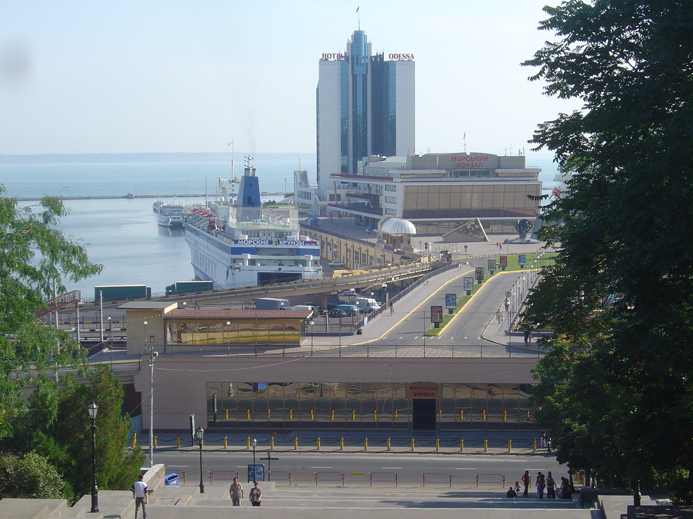
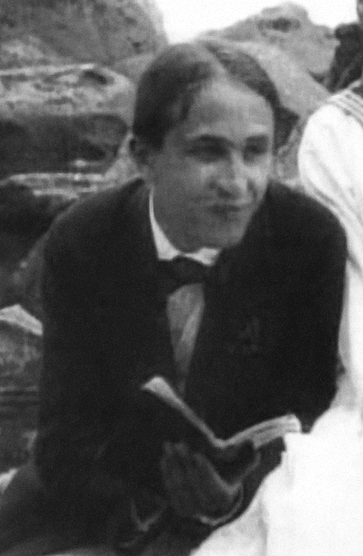
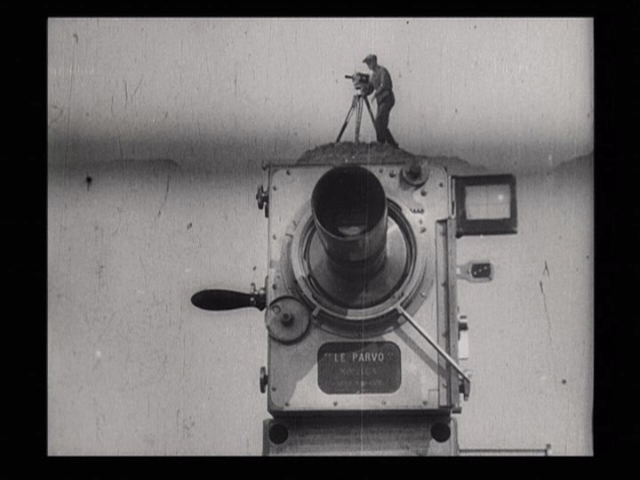
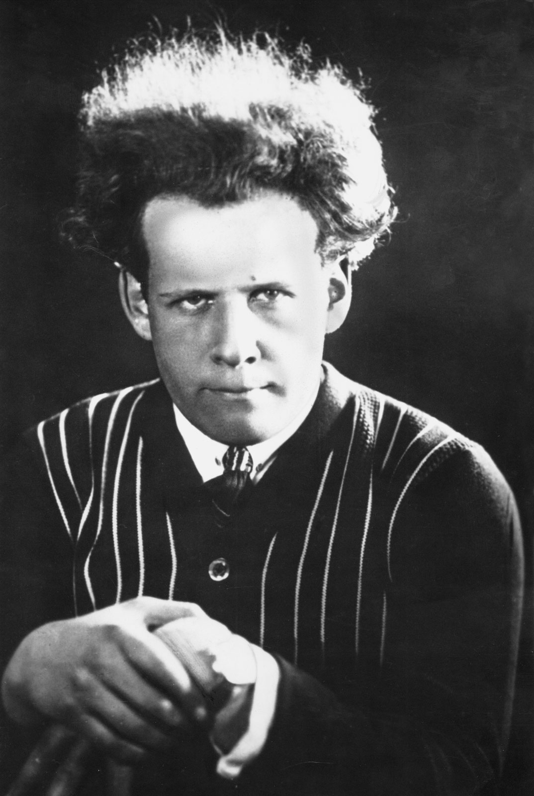
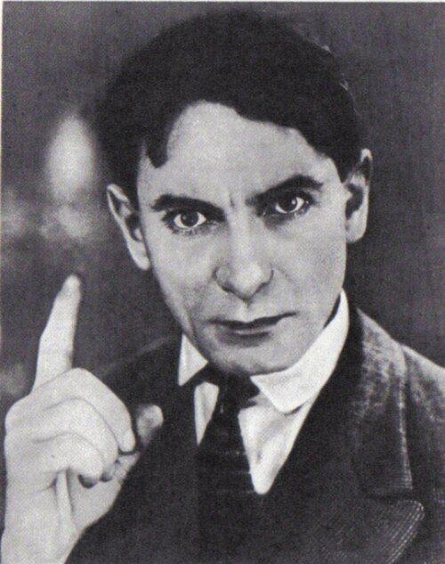
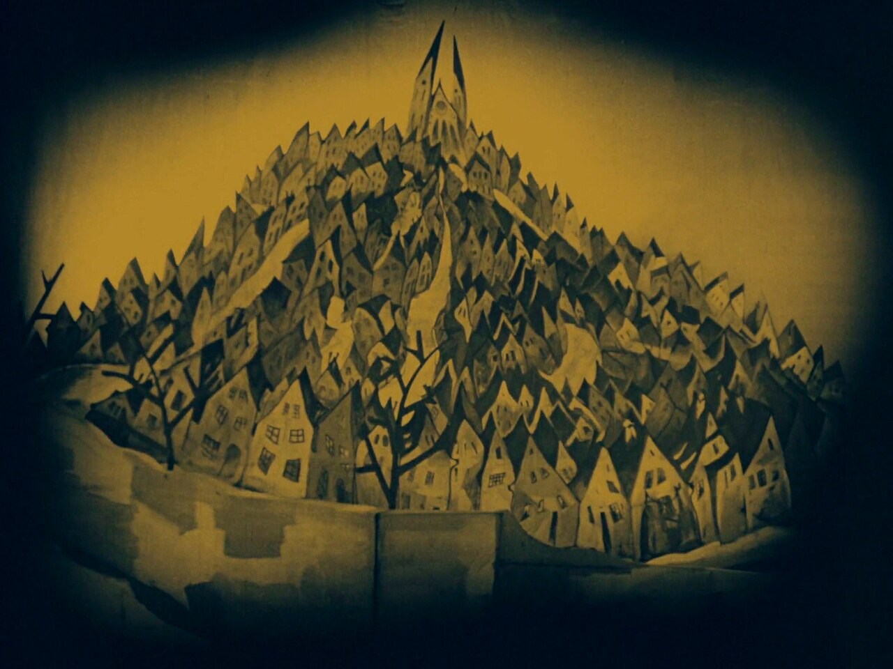
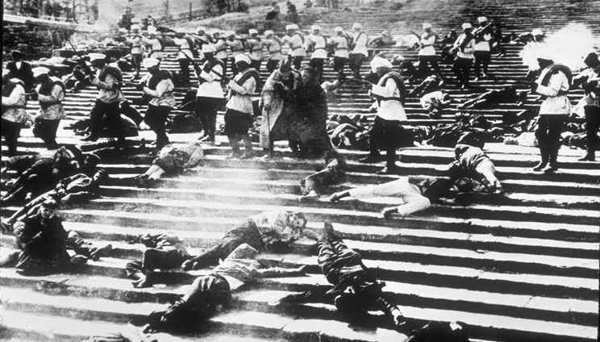

Wednesday · Film
(c. 1919–1930): workshops, collision editing, and the end of the experiment
After the , Soviet film schools and studios turned editing itself into an argument. ’s workshop, ’s collision montages, ’s documentaries, and ’s linkage cutting taught generations how shots make meaning. By the early 1930s sound, , and ’s cultural clamp closed much of that experimental window.
{kind=link}
“” is a historians’ and critics’ cluster with fuzzy edges, not a single school that every 1920s Soviet director joined and not a membership card. Useful dates run roughly from ’s postwar workshop experiments through ’s (1925), (1925), and (1928), ’s (1929), and ’s (1926) and related features — then into the early 1930s, when , as official aesthetic, and Stalin-era cultural tightening narrowed experimental ’s room to work. and circles, teaching, production, in , ’s compilation films, and ’s Ukrainian features sit inside or beside the label depending on the critic. Film stills from later restorations are often still managed as commercial assets even when the underlying silent negatives are public domain in some jurisdictions; this lesson prefers portraits, a public-domain frame already on Commons, a frame, a 1905 postcard, a later photograph of the , and a Cabinet of Dr. set still for the contemporaneous Weimar screen — each captioned as what it actually shows. No AI people.
Select any words, or tap a dotted term.
- 1919–21 Workshop after Civil War and leave studios short of stock and electricity. gathers students in and demonstrates that viewers read emotion from the order of shots — the “.” The lineage that becomes begins training directors for a new industry.
- 1922–24 NEP cinema / Lef pressure The reopens commercial distribution beside state production. and writers push art toward production and fact. ’s (1924) turns American stereotypes into comic pedagogy.
- 1925–26 Strike / Potemkin / Mother ’s (1925) and (1925) make internationally famous; the becomes the textbook example. ’s (1926), adapted from , models “linkage” that builds a continuous emotional line rather than ’s dialectical shocks.
- 1927–28 October / End of St. Petersburg / FEKS ’s (1928) restages 1917 for the tenth anniversary with dense . ’s (1927) and (1928) continue narrative . and ’s group in make eccentric, circus-inflected silents beside the “big three.”
- 1929 Man with a Movie Camera , with editing and shooting, releases — a and manifesto of that refuses staged fiction. ’s compilation method and ’s (1930) mark neighboring peaks as the silent era ends.
- 1930–34 Sound, socialist realism, clamp Sound arrives; experimental looks politically risky. The 1932 Central Committee decree on literary organizations and the codify . ’s is stopped; is sidelined from features. survives as craft inside film schools and as influence abroad, not as an open experimental license at home.
Before
Pre-Revolutionary studios, Civil War scarcity, then a workshop problem
Russian cinema before 1917 was already an industry. Directors such as made elaborate melodramas with careful lighting and set design; and others built star vehicles for a commercial audience. and had studios, distributors, and a public that knew serials and salon tragedy. The and the did not invent film on this territory. They broke the business that already existed: negative stock became scarce, electricity failed, personnel scattered, and the old private companies were nationalized or collapsed. What critics later called grew out of that breakage — a shortage economy that forced teachers and students to ask what a shot was worth when you could not afford many of them.
By 1919–1921 the new state was fighting for survival and also founding schools. The in — ancestor of — began training directors for a cinema that did not yet know its house style. , still young, gathered actors and editors into a workshop that treated cinema as construction. They re-edited existing footage, measured audience reactions, and demonstrated what became famous as the : a single neutral face, cut against soup, a child, or a corpse, seemed to “feel” hunger, tenderness, or grief. The face had not changed. The order had. That classroom fact is the hinge before the famous features. It is not yet . It is the claim that editing, not only performance, makes meaning.

{kind=link}
Politics and aesthetics arrived together. theatre trained people like in “attractions” — calculated shocks for a crowd. and writers argued that art should behave like production, not like bourgeois psychology. The after 1921 reopened some commercial circuits even as state studios organized under names such as . So the “before” of is double: a pre-Revolutionary commercial craft that scarcity interrupted, and a revolutionary culture that wanted cinema to teach, agitate, and rebuild perception. ’s workshop sat between those facts — a school solution to a material and ideological problem.
The era
From Kuleshov’s effect to Potemkin, Mother, and the Movie Camera
The cluster that textbooks call is easiest to see in a few years of releases. ’s (1924) turned American panic about Bolsheviks into comic pedagogy — as joke and lesson. ’s (1925) followed a factory conflict with metaphorical cutting so aggressive that a slaughterhouse could answer a police raid. (1925) retold the 1905 mutiny in five parts and placed the at the center of world film memory: boots, guns, a ’s horror, a carriage rolling down stone. The staircase is real; the massacre as filmed is a construction. That distinction matters for honesty and still leaves the sequence’s craft intact — rhythmic and tonal collisions designed to produce solidarity and rage.

{kind=link}
answered with a different emphasis. (1926), from ’s novel, builds a woman’s political awakening through what he theorized as linkage — shots like bricks in a wall, cumulative rather than explosive. (1927) and (1928) continued that narrative line. ’s (1928), made for the Revolution’s tenth anniversary, pushed further: statues, Kerensky, bridges, and dialectical jokes aimed at concepts as much as at suspense. In , and ’s group made eccentric, circus-bright silents that shared the decade’s appetite for constructed form without copying ’s mass-drama tone. , meanwhile, cut history from in compilation features such as (1927) — as archive labor.

{kind=link}
refused fiction. With editing and shooting, (1929) presents a Soviet city day — waking, work, sport, machines — while constantly showing the camera and the cutting room. It is a and a manifesto: life caught “unawares,” then reorganized at the splice. ’s (1930) arrived at the silent era’s edge with Ukrainian village politics and lyrical duration that film historians often shelve beside the decade even when his pulse differs from ’s percussive shocks. By then sound was arriving, and the political weather was changing. The era’s useful span is roughly 1919 to 1930: workshop claim, feature explosion, extreme, then a closing door.
The field
Eisenstein, Vertov, Pudovkin, Kuleshov — and a wider crew
Deepen first. Trained in engineering and theatre, he treated the shot as a collision unit. experiments with — faces as social types — and with attractions that startle. organizes mutiny and massacre so that editing tempo becomes political speech. risks opacity: that some party viewers found too clever for anniversary clarity. Later sound work (, ) belongs to another institutional climate; the silent features are where and practice met a mass audience. collaborated on the silent films before becoming a musical director under sound-era studio rules — a career fork that shows how the 1930s rewarded different skills.

{kind=link}
Deepen second. The ’ manifestos attacked acted cinema as a drug. newsreels practiced cutting before the 1929 feature. makes ’s hands and ’s camera into characters; the film’s subject is also its method. ’s later (1934) shows what looked like after the experimental window narrowed. Naming and is required honesty: the Movie Camera is a group invention marketed under ’s signature.
_1913.jpg){kind=link}
Deepen and third. ’s essays on directing and acting argued that editing constructs the film’s psychology; remains the classroom contrast to because it pursues identification through linkage rather than dialectical shock. ’s workshop was the seedbed: exercises, re-editing, , and a teaching lineage into . Around them: ’s compilations; in Ukraine; in ; ’s comedies; countless cameramen, editors, and actors whose names film history still under-lists. The “big three” postcard — , , — is a useful map only if you keep the workshop, the school, and the neighboring studios on the table.

{kind=link}
Elsewhere
Same years on other screens
Look sideways without turning the decade into a West-then-Asia worksheet. In Weimar Germany, Robert Wiene’s (1920) made painted distortion a world style, and Fritz Lang’s spent money on a futuristic city — Expressionist and studio-spectacular answers to modernity in the same calendar stretch as and . These films are contemporaries, not parents of . Their problems (psychic horror, classed futurism) and their tools (set design, lighting) differ from ’s splice experiments even when all parties were inventing what a modern cinema could be.

{kind=link}
In Hollywood the refined inherited from Griffith-era : match cuts, eyelines, and invisible joins that kept stars and plots clear for global export. Soviet theorists studied ’s as technique while rejecting its politics and its preference for seamless illusion. and are rival answers to the same medium — how shots relate — running in parallel through the 1920s.
In Japan, silent cinema still often traveled with narrators beside the screen even as studios modernized genres and styles; the 1920s Japanese industry is another contemporaneous machine, not a delayed copy of . In China, such as were building a commercial film culture in the 1920s; the fuller left-wing cinema wave associated with the 1930s comes after this lesson’s main window, though Soviet films and left culture would later matter there. City symphonies such as Walter Ruttmann’s Berlin (1927) share ’s urban appetite without sharing politics. Same years, different industrial and political roofs.
After
Sound, socialist realism, and long afterlives in film schools
Synchronized sound reached Soviet screens as the and cultural centralization tightened. Experimental that looked difficult or “formalist” became dangerous. The 1932 Central Committee decree reorganized artistic unions; the made the required optimistic method. ’s was stopped. lost easy access to feature resources. ’s musicals and historical epics that could be read as patriotic craft took budget priority. did not vanish as a craft — editors still cut — but the open license to make collision and into public theory narrowed sharply under .
Afterlives ran outward. Film schools from to Western universities taught the and as basic literacy. French critics and directors inherited as argument and as permission to show the cut; is a different postwar cluster sometimes taught on the same shelf. Later militant cinemas occasionally cited as ancestor. Restorations, programming, guides, and essays keep the silents circulating under licensed catalogues. The label remains useful if you keep it fuzzy: a decade of workshop theory and feature experiment, closed by sound and , still active as pedagogy.
A question
A question to keep asking
If two shots placed side by side can make a face look hungry, grieving, or tender without changing the face, what responsibility does that give the editor — and what should a viewer notice about every cut that feels “natural”?
Fun fact
The Odessa Steps massacre was staged for the camera

{kind=link}
’s (1925) builds its most quoted sequence on the real in : soldiers advance, a baby carriage rolls, close-ups collide. Historians of 1905 record a mutiny on the battleship and unrest in the port city, including fires at the harbor — but not this exact staircase massacre as filmed. The sequence is constructed cinema: extras, angles, and cutting that invent a public memory so strong that later visitors sometimes treat the film’s event as fact. The postcard of the burned port and the later photograph of the stairs on this page are place evidence; the marching soldiers still is a public-domain frame from the film itself.